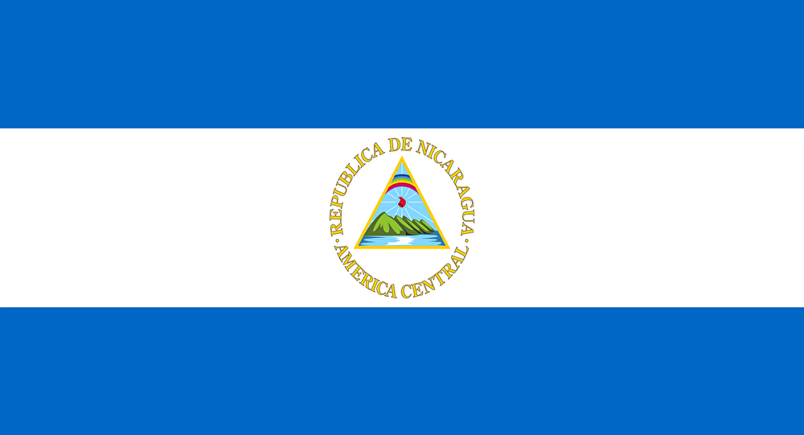
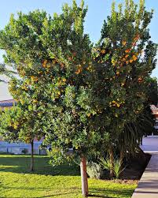
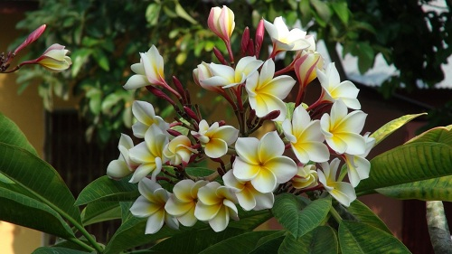
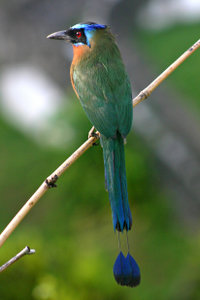

Simbolos Patrios
Bandera y Escudo
La Bandera Nicaragüense tiene tres franjas horizontales (dos azules, arriba y abajo) con el escudo nacional en el centro, en la franja blanca. La franja blanca del Pabellón Nacional representa el territorio de la nación y simboliza la pureza de Nicaragua. Las dos franjas azules significan que Nicaragua está bañado por dos océanos. El escudo nacional es un triángulo rodeado circularmente con las palabras REPÚBLICA DE NICARAGUA arriba y AMÉRICA CENTRAL abajo
Arbol Nacional
El madroño (Arbutus unedo) es una especie de arbusto perteneciente al género Arbutus en la familia Ericaceae. Arbolillo de 4-7 m con tronco rojizo más o menos cubierto de largas escamas grisáceas, con ramas grises y ramillas abundantemente foliosas, pardo-rojizas, a menudo piloso-glandulosas. Las hojas son persistentes, de 8 por 3 cm, y son lanceoladas, lauroides, serradas o serruladas, de un verde brillante por el haz, mates por el envés, con pecíolo de hasta 7-8 mm. Las inflorescencias se presentan en panículas colgantes, con raquis rojizo y brácteas ovado-lanceoladas cupuliformes envolventes, rojizas.
Flor Nacional
Esta colorida flor llamada Sacuanjoche, es la Flor Nacional de Nicaragua. La Sacuanjoche crece en los árboles Plumerian Alba o Frangipani, un tipo de árbol muy angosto que florece en Mayo. El nombre local es Sacuanjoche de origen Náhuatl. La flor aparece en los billetes de 1,5, 10 y 25 centavos que no son frecuentemente utilizados.
Ave Nacional
El pájaro nacional es el Guardabarranco. Esta colorida ave es fácilmente reconocida por su larga cola rematada por dos plumas azul. Los Guardabarranco comen principalmente insectos y cavan un hoyo en la tierra para poner sus huevos. Pueden ser vistos en los bosques de Nicaragua, generalmente en el suroeste. Sus habitats no están limitados por los limites departamentales, ya que puede ser visto hasta en la capital, Managua.